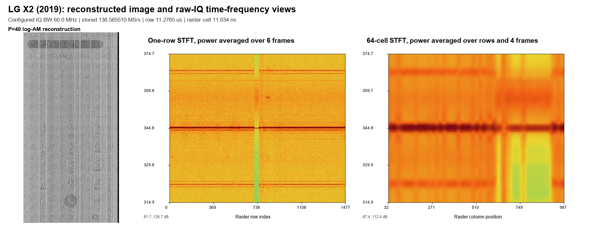
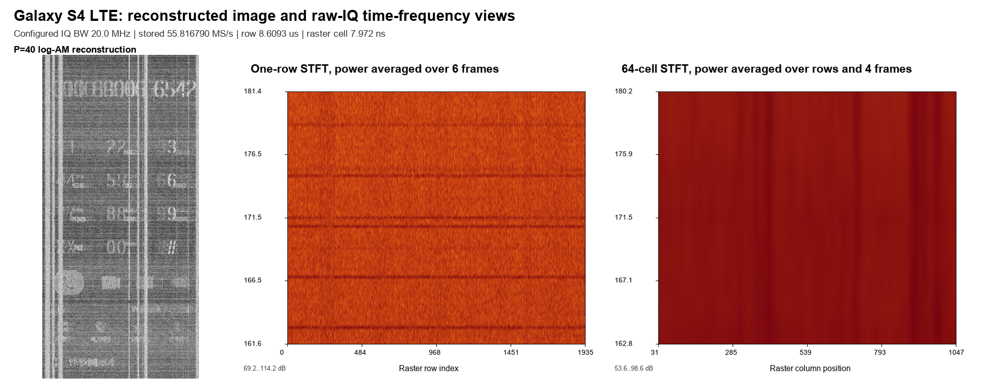
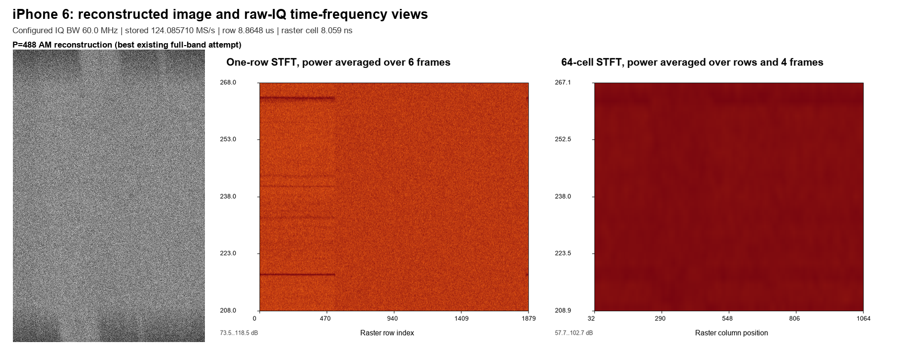

3기종 누설 IQ: 복원 화면과 STFT
2026-09-23 정정: 이 페이지는 IQ를 little-endian으로 잘못 읽은 폐기 결과다. 복원·STFT·위상 수치를 사용하지 말고 big-endian 정정 재분석을 확인한다.
Row-scale: 한 raster line 창. Column-phase: 각 line을 접어 64 raster-cell 창으로 평균.
| 기종 | 설정 IQ BW | 저장 sample rate | row | raster cell |
|---|---|---|---|---|
| iPhone 6 | 60 MHz | 124.085710 MS/s | 8.86485 µs | 8.05895 ns |
| LG X2 (2019) | 60 MHz | 136.565510 MS/s | 11.27654 µs | 11.03380 ns |
| Galaxy S4 LTE | 20 MHz | 55.816790 MS/s | 8.60930 µs | 7.97158 ns |
LG X2 (2019)



Galaxy S4 LTE



iPhone 6
